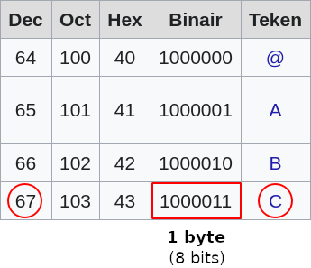
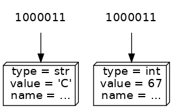
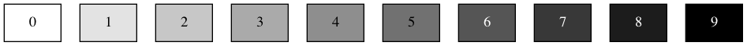
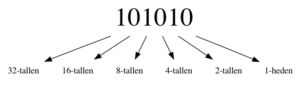
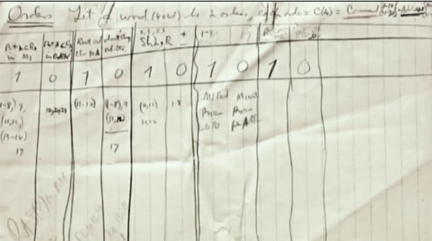

Binaire getallen#
Hoe zijn gegevens opgeslagen?#

Dezelfde bits kunnen een andere waarde representeren, afhankelijk van het type!
Laten we eerst kijken hoe karakters worden gerepresenteerd door een computer. De computer kent alleen maar bytes (8 opeenvolgende bits) dus hoe kan het karakters als A, B en C opslaan? Dit kan een computer niet en er is een vertaaltabel nodig om van bits naar karakters te komen en vice versa. De ASCII tekenset is zo’n vertaaltabel.
ASCII#
American Standard Code for Information Interchange

Je zult later zien dat je decimale getallen kan omzetten naar een binaire representatie en in dit voorbeeld staat 67 decimaal gelijk aan 1000011 binair (bits!). Het karakter dat volgens de tabel bij deze waarde hoort is het karakter C.

Je ziet dat dezelfde bits zowel een integer (decimaal) of string (teken) kunnen representeren, afhankelijk van het type: int of str. Anders gezegd, het type bepaalt of de binaire waarde (de bits) een getal vertegenwoordigen waar bijvoorbeeld mee gerekend kan worden of een karakter dat op scherm kan worden geprint: het type bepaalt de context van gebruik.

Denk terug aan de “dozen” die we hebben gebruikt om een voorstelling te maken van wat zich in het geheugen van een computer afspeelt en met wat we nu weten kunnen we dit beeld gaan aanpassen. De “inhoud” van een doos zijn de bits, zoveel is nu wel duidelijk. De inhoud van verschillende dozen kan hetzelfde zijn maar het type bepaalt de representatie, bijvoorbeeld of het integer met waarde 67 of een string met waarde “C” is.
De naam van een waarde (variabele) maakt dus ook niet uit, je weet inmiddels dat je (bijna) elke naam voor een variabele mag kiezen en het is niets meer dan een verwijzing naar de waarde die voor jou betekenis heeft (en je zult misschien hebben gemerkt dat het kiezen van een betekenisvolle naam niet altijd eenvoudig is!).
Decimale computers#
Computers werken op stroom üò±
Dus moet je je getallen representeren met voltages.

Dat is lastig, zeker op schaal: welke waardes zijn dit bijvoorbeeld?

Binaire computers#
Binaire getallen maken dit veel makkelijker:

Kijk maar:

Ternaire computers#
Ternaire computers hebben ook bestaan!

Deze maakte gebruik van ‘balanced ternary’ (zie ook het huiswerk) door negatieve en positieve voltages te onderscheiden.
Binair stelsel#
Van rechts naar links representeert elk binair cijfer een steeds grotere macht van 2.

Binaire “cijfers”#
In het decimale stelsel heten tekens cijfers (Engels: digits)
Een getal kan meerdere cijfers bevatten.
In het binaire stelsel heten tekens bits (“binary digits”)
Een getal met 8 bits wordt een byte of octet genoemd

Decimale getallen omzetten naar binaire getallen#
Stel we willen het getal 141 van decimaal naar binair omzetten
De eerste stap is lastig als we van links naar rechts omzetten. Waarom?
Omdat we niet weten bij welke macht van twee we moeten beginnen!
Een betere aanpak: van rechts naar links!#
Wat zou de meest rechter bit van de binaire versie van 141 zijn?
En de twee meest rechtse bits?
Alle machten van twee, behalve 1, zijn even! (Waarom?)
141 is oneven, dus moet de laatste bit een 1 zijn! Die stelt immers de eenheden voor.
Een algoritme!#

Het algoritme uitwerken#
We kunnen dus 141 binair schrijven, als we 70 binair kunnen schrijven
Hier zie je het recursieve geval!
Als het getal op 1 eindigt, eindigt het binaire getal ook op 1
Als het getal op 0 eindigt, eindigt het binaire getal ook op 0
En we hebben de binaire versie van het getal gedeeld door 2 nodig.
Wat is nu het basisgeval?
Als we 0 binair willen schrijven, schrijven we het als een lege string
Dit klinkt gek, maar licht ik zo toe!
En nu in code#
def num_to_binary(n):
"""Converts a value to binary."""
if n == 0:
return ...
elif ...:
return ...
else:
return ...
We hebben een basisgeval nodig, en we moeten een keuze maken: is het getal even of oneven
En wat is in die twee gevallen het resultaat?
Uitgewerkt in code#
def num_to_binary(n):
"""Converts a value to binary."""
if n == 0:
# een lege string als basisgeval
return ''
elif n % 2 == 1: # is n oneven?
# neem dan de binaire waarde van de helft, met een 1 er achter
return num_to_binary(n // 2) + '1'
else:
# neem anders de binaire waarde van de helft, met een 0 er achter
return num_to_binary(n // 2) + '0'
Dit is overigens √©√©n van de practica-opdrachten; you‚Äôre welcome üôÉ
In de herhaling: waarom is het basisgeval een lege string?
Omdat anders de recursie minder goed werkt: dan zou je altijd een 0 aan het begin van je resultaat krijgen.